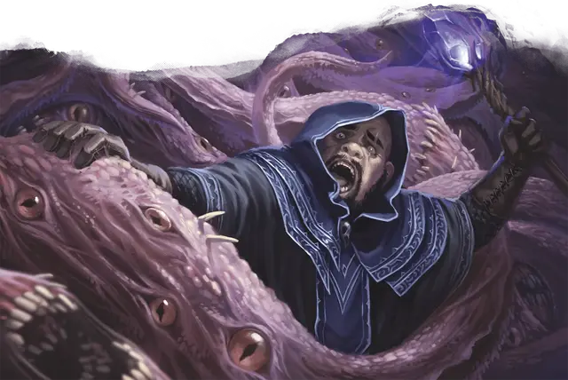

Брешь в реальности
Reality Break
8 уровень, Вызов (дюнамантия: хронургия)

Время сотворения 1 действие
Дистанция 60 футов
Компоненты В, С, М (кристаллическая призма)
Длительность Концентрация, вплоть до 1 минуты
Подклассы магия хронургии (волшебник), магия гравитургии (волшебник)
Вы разрушаете границы между пространствами и временными линиями, погружая существо в пучину хаоса и безумия. Цель должна преуспеть в спасброске Мудрости, иначе она не может совершать реакции, пока заклинание не окончится.
В начале каждого своего хода существо под действием заклинания совершает бросок к10 и попадает под действие одного из эффектов, указанных ниже. В конце своего хода существо может повторить спасбросок Мудрости, при успехе оканчивая на себе эффект.
Эффекты бреши в реальности
| к10 | Эффект |
| 1-2 | Виденье Дальнего Предела. Цель получает 6к12 урона психической энергией и является ошеломлённым до конца хода. |
| 3-5 | Разрыв пространства. Цель совершает спасбросок Ловкости и получает 8к12 урона силовым полем при провале и половину урона при успехе. |
| 6-8 | Червоточина. Цель, вместе с всем, что она несёт и носит, телепортируется до 30 футов в незанятое видимое пространство по вашему выбору, получает 10к12 урона силовым полем и падает ничком. |
| 9-10 | Хлад пустоты. Цель получает 10к12 урона холодом и ослеплена до конца хода. |